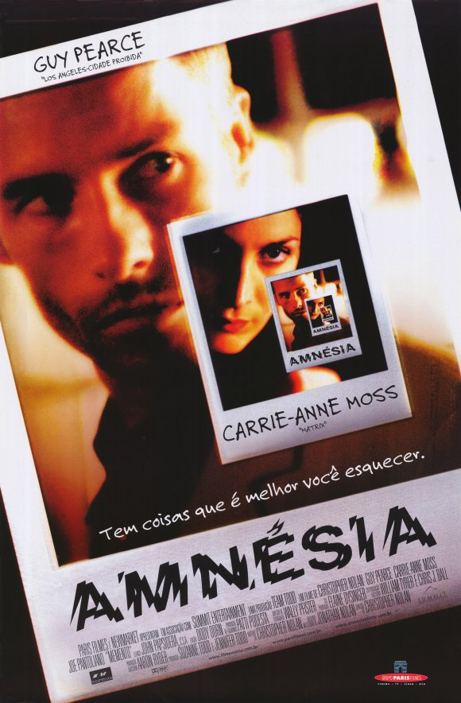

Помни Memento

«... Конец - это только начало» Сюжет фильма рассказывает историю Леонарда, который помнит, что его жена была изнасилована и убита, но он не помнит кто это сделал, так как страдает
потерей кратковременной памяти, и не помнит, что с ним было 15 минут назад, для этого Лео разрабатывает свою систему ведения воспоминаний, и живёт при их помощи, чтобы найти и отомстить убийце жены.
Кристофер Нолан разделил повествование истории фильма на несколько веток, точнее на три. Первая ветка — это воспоминание Лени, которые он вспоминает и помнит всегда. Вторая ветка — это прямая ветка она является черно-белой,
с неё и нужно запоминать историю.
Третья ветка является цветной, она идёт задом наперёд, с неё начинается фильм. Нолан построил свое кино, таким образом, что у него начало фильма это его конец, а конец — это начало. И нужно помнить
все моменты, и смотреть внимательно. Актеры: Гай Пирс, исполняет роль Леонарда, и у него получилось воплотить в жизнь, героя, который ничего не помнит, и должен делать тату и вести учёт и следовать своей системе.
Следя за главным героем в фильме, ловишь себя на мысли, что одновременно растерян и в тоже время собран. Джо Пантолиано, исполняет роль Тедди, данный персонаж, скользкий тип, что общается с Лео
ради своей выгоды. Кэрри-Энн Мосс, её персонажа зовут Натали, и с ней у меня складывалось двоякое впечатление, ей как бы и сопереживаешь, и как бы нет. Хочется так же отметить манеру повествования
в фильме, Нолан рассказывает свою историю не торопливо, понятно, поначалу, конечно, я сидел в недоумении, но ближе к одной четвёртой фильма, я разобрался, что да как, и понял на, что нужно обращать внимание. Я
знаком с такими работами Нолана, как Интерстеллар, Довод, который я считал его самым сложным фильмом, Трилогия о Темно рыцаре и Начало, но после просмотра
Мементо, я сижу в раздумьях, и набираю эту рецензию, и думаю над последними словами главного героя. Так же хочу отметить, хоть Мементо и является
детективом/триллером, Нолан может разрядить обстановку вставив в диалоги героев пару уместных шуток. Если вы решите посмотреть данный фильм, то советую выбрать хорошую компанию или смотреть одному, также убрать
телефоны и просто следить за сюжетом, может по началу и будет что-то не понятно, потом все поймёте.